ReViV：观看者与所见世界的统一 4D 重建
《ReViV: Reconstructing the Viewer and the View in 4D from Monocular Egocentric Video》完整易读学术解析
论文元信息与来源状态
读前导航
flowchart LR O[RGB observation clip] --> R[Cosmos RGB tokens] O --> C[Continuous ViT context] D[Depth / camera / gaze / body / hands] --> T[Modality tokenizers] R --> Z[Unified discrete state Z] T --> Z C --> M[MGET] Z --> M M --> P[Masked conditional distributions] P --> S[Three-step parallel sampling] S --> Y[Viewer and view states] Y --> A[Floor or metric-depth alignment] A --> F[Metric-aligned 4D reconstruction]
| 问题要素 | 论文设定 | 易混淆边界 |
|---|---|---|
| 输入 | 单目、第一视角 RGB 视频 clip | 不需要测试时 SLAM，但训练和可选尺度对齐会使用外部模型生态 |
| Viewer | 全身、左/右手、视线 | 不是从画面直接可见的第三人称人体；大量关节被自身遮挡 |
| View | 相机轨迹、时间一致深度 | 网络先给相对深度，米制尺度需要轻量对齐 |
| “4D” | 3D 人体/场景状态随时间变化 | 不是带 action transition 和长期 rollout 的世界模型 |
| 生成式 | 对缺失离散 token 建模并采样 | 不是像素 diffusion；核心损失仍是 token cross-entropy |
符号表
| 符号 | 含义 | 形状/坐标说明 |
|---|---|---|
| $\mathcal X$ | 观测条件 | 正文先定义为 RGB；MGET 中扩展为 RGB token 与连续 ViT 特征 |
| $\mathcal Y$ | 待恢复状态 | 手、身体、视线、深度、相机五组时序量 |
| $\mathbf y_m$ | 模态 $m$ 的连续信号 | 人体/手为 $N\times J\times3$；其他形状由各 tokenizer 决定 |
| $\mathbf z_m$ | 模态 $m$ 的离散 token 序列 | 长度 $L_m$、词表大小 $K_m$ 随模态变化 |
| $\mathbf Z_{\mathcal V}$ | 训练样本中可见 token | 进入 encoder 的条件集合 |
| $\mathbf Z_{\mathcal M}$ | 被遮住的目标 token | decoder 预测并计算交叉熵 |
| $\mathbf x_{\mathrm{ViT}}$ | 未经量化的 RGB 连续特征 | 保留高频像素上下文，不作为离散分类目标 |
摘要逐句义项解析
论文内容摘要先给场景：智能眼镜、头戴设备和前置相机持续记录“人怎样看世界、怎样在其中行动”。因此目标不只是重建场景，也要恢复佩戴者自己的动作。
随后指出三类现有问题：依赖预先计算的相机轨迹等辅助输入；把环境感知与人体 ego-motion 分开；推理常包含缓慢优化。ReViV 的主张是用一个单目 RGB 视频和一个统一前馈架构同时处理 viewer 与 view。
方法义项是“学习完整多模态联合概率”：RGB、相机、视线、身体、手和深度不再有固定的先后级联。Masked Generative Egocentric Transformer（MGET）通过预测随机缺失 token 同时学习模态内部时间动态与模态之间的对应关系。
结果义项是分层的：身体、手、视线和相机取得最优或强竞争精度与效率；深度是“highly competitive”而非最优。论文在摘要中已用不同措辞区分这些结论，后文 Table 4 也确实显示 EgoMono4D 的深度明显更好。
1. Introduction
本节任务
Introduction 从第一视角设备应用出发，说明 viewer 与 view 的耦合为何值得统一建模，再将第三人称/多视图 4D 重建的进展与第一视角缺口连接起来，最后给出 ReViV 的完整问题设定与三项贡献。
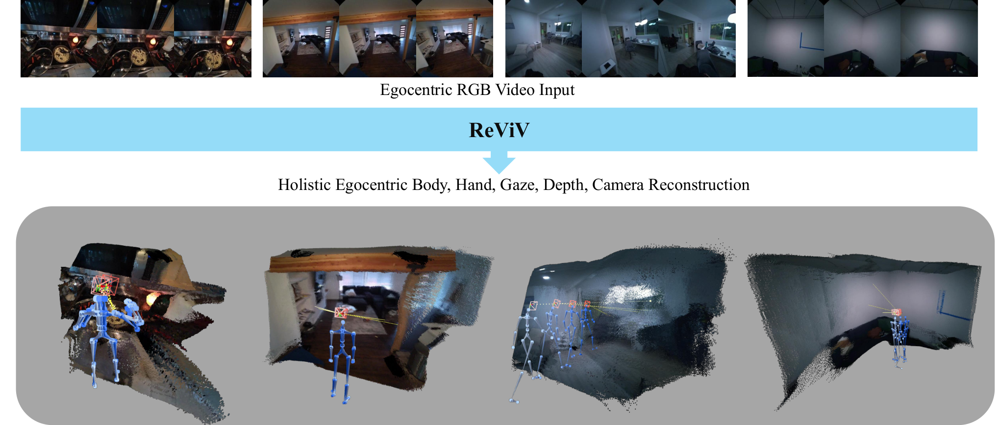
第一视角视觉直接记录人类感知、行动和交互，适用于 AR/VR、辅助机器人和人机交互。系统需要同时理解外部环境与佩戴者动作、手势和意图，而不是只做其中一半。
现有方法常分为两群：环境重建方法恢复深度、点云、对象或相机；人体方法恢复身体与手。分开处理忽略了自然约束：相机绑在头部，视线与场景目标相关，双手运动与可见物体相关，脚步与相机全局移动也相关。更现实的问题是许多人体方法还需要 SLAM、预建点云或外部手部追踪器。
第三人称或多视图 4D 重建已经能用持久 3D Gaussian 与运动基底恢复动态场景，也出现无需测试时优化的前馈模型；但摄像机在人体外部，因此不能直接解决“相机佩戴者的身体大量不可见”这一问题。
ReViV 将身体、双手、视线、相机和深度定义为一个 masked generative modeling 问题。推理时用 RGB 条件化；单目深度先保持仿射不变，再在有地面或外部 metric depth 锚点时放入米制 4D 坐标。
- 为什么第一视角人体运动天然是多解问题？
- viewer 与 view 之间至少有哪些几何或语义耦合？
- “单目输入”与“完全不使用外部模型”为什么不是同一主张？
2. Related Work
作者按三个问题域组织相关工作：一般 4D 重建、第一视角场景重建、第一视角人体运动。这个分类不是文献罗列，而是逐步缩小缺口：已有动态重建 → 已有 ego 场景理解 → 已有 ego 人体估计 → 尚缺统一 viewer–view 模型。
2.1 4D Reconstruction
早期动态重建关注物体 3D 运动轨迹，随后发展到同步多视图视频的动态场景表示，再逐渐放松到单目视频。Shape of Motion 使用持久 3D Gaussian 与紧凑运动基底处理长时动态，但仍需每场景优化。
近期前馈式方法可在推理时直接重建并追踪动态场景，速度和跨场景泛化更好。然而这些方法主要针对第三人称或多视图，相机能看到被重建对象；第一视角中佩戴者身体处于视野外，信息结构不同。
2.2 Scene Reconstruction from Egocentric Videos
EgoM2P 已经联合 RGB、深度、视线和相机做多任务预训练；EgoGaussian 同时恢复场景与动态对象；EgoMono4D 以自监督点云序列重建应对标注稀缺。这些工作证明第一视角视频能支持整体场景建模，但关注点仍偏场景/对象几何，没有显式恢复完整人体与手部交互动态。
2.3 Human Motion Estimation from Egocentric Videos
一条路线使用鱼眼相机直接看身体，但失真和自遮挡严重；EgoEgo 先估头部再推全身，却不恢复手；Ego-Pose 与对象感知方法分别引入强化学习或场景对象。
更近的 HMD2、EgoAllo、UniEgoMotion 使用条件 diffusion 生成身体运动，精度强但普遍依赖 SLAM 轨迹、点云或外部手部模型。视线方向也被用于行为理解和未来预测，但很少与场景几何、相机、身体和手同时建模。
因此论文的具体空白不是“没人做第一视角人体”或“没人做第一视角场景”，而是没有一个单目模型把全身、手、视线、相机和深度放进共同 4D 分布。
- 为什么第三人称单目 4D 方法不能直接恢复相机佩戴者？
- ReViV 从 EgoM2P 继承了什么，又增加了什么？
- 依赖 GT/估计相机轨迹会如何影响人体结果的误差链？
3. Data Engine
本节任务
统一模型需要不同数据集共同训练，但各数据集模态缺失、坐标约定和传感器都不同。本节建立自动数据引擎：扩展几何伪标签，统一人体坐标，并把 EgoM2P 的约 4B token corpus 扩至 7B。
| Table 1 / 数据集 | RGB | 深度 | 视线 | 相机 | 手 | 全身 |
|---|---|---|---|---|---|---|
| EgoExo4D | ✓ | × | ✓ | ✓ | × | × |
| HoloAssist | ✓ | ✓* 伪标签 | ✓ | ✓ | ✓ | × |
| HOT3D (Aria) | ✓ | ✓* | ✓ | ✓ | ✓ | × |
| HOT3D (Quest) | ✓ | ✓* | × | ✓ | ✓ | × |
| ARCTIC | ✓ | ✓* | × | ✓ | ✓ | × |
| TACO | ✓ | ✓* | × | ✓ | ✓ | × |
| H2O | ✓ | ✓ | × | ✓ | ✓ | × |
| EgoGen | ✓ | ✓ | × | ✓ | × | × |
| Nymeria | ✓ | ✓* | ✓ | ✓ | × | ✓ |
Table 1 解读：没有一行同时拥有全部六类标注；全身只来自 Nymeria，双手来自另一组数据。ReViV 能从“无身体标签”的样本获益，依赖的正是掩码模型允许每个样本只提供它拥有的模态。星号深度由作者生成，不能与硬件真值等价。
3.1 Temporally Consistent Geometric Pseudo-Labeling
硬件与传感器流不完整导致许多数据没有稠密 3D 几何。作者用 Video Depth Anything 生成时间一致的视频深度伪标签，把几何监督从受限的手—物交互场景扩展到更开放环境。
证据边界伪标签提供跨帧相对几何和更大覆盖，但其尺度、薄结构、反射与动态区域误差会成为训练分布一部分。主文消融只证明移除大型数据集会变差，没有将“更多样本”与“伪标签算法质量”完全解耦。
3.2 Unified Kinematic Representation
相机坐标中的手：每一帧把手关节投到当前相机坐标。这样同一种抓取动作不会因佩戴者在房间里走了多远而改变表示，适合学习局部操作先验；代价是手的全局世界轨迹需要结合相机再恢复。
重力对齐世界坐标中的身体：若直接用首帧相机坐标，头部初始俯仰或横滚会让整个世界“斜着”。作者取首帧相机姿态，并把 up vector 投影到与重力相反方向，建立水平参考系，从而把真实行走与相机初始倾斜分离。
这两种坐标不是矛盾：手优先保持视点相关的局部操作稳定，身体优先保持全局导航和地面关系稳定。后续 floor fitting 也依赖身体世界坐标中的脚部高度。
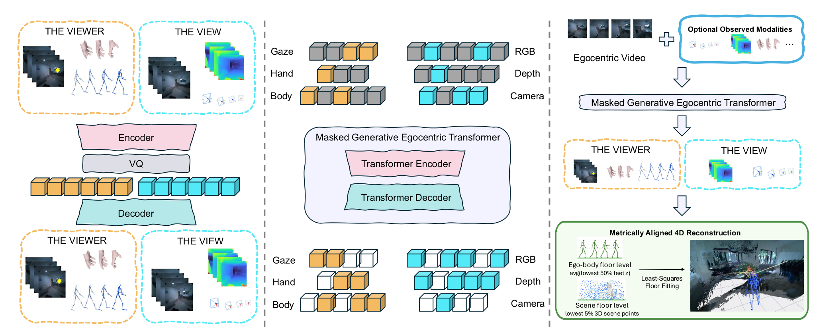
- Table 1 为什么要求模型支持缺失模态训练？
- 手与身体为何使用不同参考坐标？
- 伪深度扩大监督时引入了什么新风险？
4. Method
方法按三层展开：先把不可见人体问题写成联合概率；再用模态专属 VQ-VAE 建立统一离散接口；最后用 MGET 对随机缺失 token 做条件预测。
4.1 Problem Formulation
观测集合 $\mathcal X=\{\mathbf x_{\mathrm{rgb}}\}$，目标集合 $\mathcal Y=\{\mathbf y_{\mathrm{hand}},\mathbf y_{\mathrm{body}},\mathbf y_{\mathrm{gaze}},\mathbf y_{\mathrm{depth}},\mathbf y_{\mathrm{cam}}\}$。由于身体严重遮挡，直接学习单值函数 $f:\mathcal X\to\mathcal Y$ 是 ill-posed：相同画面可能对应多个合理身体状态。
$\mathbf x_{\mathrm{rgb}}$ 与每个 $\mathbf y$ 都是 clip 级时序信号。计算目标不是按这个书写顺序依次生成，而是用后续掩码机制近似任意条件 $p(\mathbf Z_{\mathcal M}\mid\mathbf Z_{\mathcal V})$；推理特例才是 $p(\mathcal Y\mid\mathcal X)$。
直觉上，联合建模让画面、相机、人体和几何互相提供约束，避免把一个预计算相机误差固化为身体模型输入。它仍是数据驱动相关性，不自动提供显式物理因果。
Metric Alignment of 4D Reconstruction
网络先输出 temporally consistent affine-invariant depth。若地面可见，作者拟合场景地面并用预测身体尺度约束；若地面不可见，可选用 VIPE metric depth 作为锚点。于是 viewer 与 view 才被放入共同米制空间。Appendix D 给出具体最低点比例和最小二乘步骤。
4.2 Unified Discrete Representation
连续域中的像素、位姿、2D 视线和 3D 关节具有完全不同的维度和统计尺度。论文不把它们直接回归到一个共同向量，而是让每个模态拥有自己的离散词表，统一的是“token 接口”，不是数值空间。
$D_m$ 是连续输入维度，$L_m$ 是压缩后的 token 数，$K_m$ 是该模态词表大小，$d$ 是 code latent dimension。论文上下文和 Appendix A 给出 $d=32$；RGB/深度 codebook 为 64,000，相机/视线/手/身体分别为 256/512/1024/2048。
执行顺序是 continuous signal → encoder latent → 最近/球面 code 量化 → integer token；解码反向进行。身体与手还使用单位球投影和 EMA codebook 更新，减少大规模异构数据上的 codebook collapse。
每段 $\mathbf z_m$ 保留自己的词表与长度，MGET 用 modality-type embedding 区分它们。这个式子完成的是序列组织，而非声称 RGB token 100 与身体 token 100 表示同一事物。
人体输入 $\mathbf y_m\in\mathbb R^{N\times J\times3}$。身体/手 tokenizer 对时间与关节拓扑做 2D convolution，再经 12-block Transformer；60 帧、21 关节和 $[2,3]$ tubelet 对身体产生 210 token。左右手分别训练，并用镜像另一只手的数据增强。
4.3 Masked Generative Egocentric Transformer
MGET 基于 T5 encoder–decoder：encoder 12 blocks、decoder 12 blocks、hidden dimension 768。离散 token 先经模态专属 embedding，加可学习 modality type embedding 与固定正弦时空位置编码。
量化 RGB 会损失纹理和边缘，因此作者另设可训练 ViT，直接将 raw video 编为连续 $\mathbf x_{\mathrm{ViT}}$。这条旁路只提供上下文，不进入离散交叉熵；Appendix F.2 会验证其跨任务收益。
训练为每个样本随机取二值 mask $\mathbf M\in\{0,1\}^{|\mathbf Z|}$，划分可见 $\mathbf Z_{\mathcal V}$ 与目标 $\mathbf Z_{\mathcal M}$。随机性覆盖模态内部片段缺失与模态整体缺失，因此同一个目标同时承担时间补全和跨模态翻译。
$i\in\mathcal M$ 表示只对被选为目标的离散 token 求和；$z_i\notin\mathbf x_{\mathrm{ViT}}$ 排除连续 ViT 特征。模型对不同模态使用专属线性 head，分别输出其 $K_m$ 类 logits，然后统一累积 cross-entropy。
若同一身体序列部分可见，梯度推动模型学动作连续性；若只见 RGB，梯度推动视觉到人体/场景；若多个模态共同可见，又会学更复杂条件。论文据此把所有 mask 条件的集合视为对联合分布的高效代理。
推理将 RGB token 设为 $\mathbf Z_{\mathcal V}=\mathbf Z_{\mathcal X}$，所有目标状态设为 $\mathbf Z_{\mathcal M}=\mathbf Z_{\mathcal Y}$，再进行 iterative parallel decoding。具体三步 schedule、CFG 与 top-$p$ 在 Appendix C。
- 统一表示为什么仍需每模态独立 codebook？
- $\mathbf x_{\mathrm{ViT}}$ 为什么不出现在损失求和里？
- 随机 mask 如何同时产生时间建模和跨模态学习？
- Equation (1) 的联合分布与 Equation (3) 的训练代理是什么关系？
5. Experiment
本节任务
实验按五类下游任务与一组系统消融展开：身体、手、相机、视线、深度，以及统一训练/数据/容量/掩码策略。各任务使用的指标和对齐方式不同，不能只把数字横向混看。
5.1 Egocentric Body Motion Reconstruction
研究问题与协议
比较对象是 diffusion-based EgoAllo 与 UniEgoMotion。两者不能只凭单目 RGB 工作，作者分别提供 VIPE 估计相机或 ground-truth camera；ReViV 不接收相机轨迹。ADT 严格排除在训练外，量化使用 3,185 个有 3D 身体标注的 clip。
GA-MPJPE：整段序列只做一次旋转、平移、尺度 Procrustes，对全局轨迹较敏感。PA-MPJPE：每帧各自对齐，主要测局部姿态。Similarity/FID：先用预训练 TMR motion encoder 投到 latent，前者是配对 cosine similarity，后者测预测动作分布与真值分布的距离。
| Table 2 / 方法 | 输入相机 | GA-MPJPE ↓ | PA-MPJPE ↓ | Similarity ↑ | FID ↓ | 时间/clip ↓ |
|---|---|---|---|---|---|---|
| EgoAllo | VIPE | 227.6 | 167.5 | 0.529 | 1.069 | 101.0 s |
| EgoAllo | GT Cam | 198.4 | 136.8 | 0.556 | 1.160 | 72.5 s |
| UniEgoMotion | VIPE | 130.5 | 98.4 | 0.572 | 1.087 | 37.6 s |
| UniEgoMotion | GT Cam | 105.8 | 88.7 | 0.591 | 1.098 | 9.1 s |
| ReViV | None | 111.5 | 88.6 | 0.751 | 0.442 | 0.7 s |
Table 2 逐结论：若与 VIPE-camera baseline 比，ReViV 全指标更好且相对 EgoAllo 约快 144 倍、相对 UniEgoMotion 约快 54 倍。若给 baseline GT camera，UniEgoMotion 的 GA 仍以 105.8 优于 111.5；但 ReViV 的 PA、Similarity、FID 更好，且不需要轨迹。
这支持“避免中间相机误差级联”和“联合预训练形成动作先验”。它不能证明绝对世界坐标完全准确：GA 已去掉一个全局 Sim(3) 差异，且 ReViV 后续仍需尺度对齐。
5.2 Egocentric Hand Motion Reconstruction
协议与指标
基线 HaMeR 是强 frame-based hand model，Dyn-HaMR 使用动态/测试时优化。数据规模为 HoloAssist 27,910 个验证 clip、HOT3D 1,519、ARCTIC 449、TACO 998。Dyn-HaMR 在完整 HoloAssist 上计算代价过高，作者随机抽 3,000 个 clip 做其比较。
GA 与 PA 含义同身体；RA-MPJPE 每帧先减去手根节点，再计算关节误差，更强调手指相对形状。全部单位为毫米，越低越好。
| Table 3 | 时间 ↓ | HoloAssist GA/RA/PA ↓ | HOT3D GA/RA/PA ↓ | ARCTIC GA/RA/PA ↓ | TACO GA/RA/PA ↓ |
|---|---|---|---|---|---|
| HaMeR | 72 s | 59.5 / 57.9 / 32.9 | 94.4 / 74.1 / 48.1 | 95.9 / 39.2 / 28.6 | 52.0 / 39.3 / 29.1 |
| Dyn-HaMR | 280 s | 49.6 / 31.5 / 23.0 | 107.7 / 46.9 / 32.0 | 76.9 / 33.3 / 22.4 | 48.0 / 32.5 / 23.5 |
| ReViV | 0.7 s | 23.5 / 29.7 / 10.5 | 38.2 / 48.1 / 13.6 | 35.1 / 33.0 / 13.7 | 20.3 / 25.2 / 9.4 |
ReViV 在四个数据集的 GA 与 PA 都最好；RA 在 HOT3D 上 Dyn-HaMR 的 46.9 略好于 ReViV 的 48.1，在 ARCTIC 上 ReViV 33.0 与 Dyn-HaMR 33.3 基本接近。论文 caption 的“SOTA across four benchmarks”应理解为总体/主要指标，而非每个单元格都获胜。
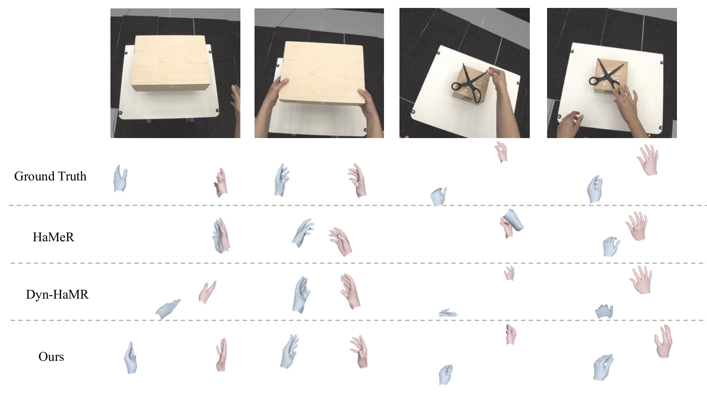
速度上 0.7 秒约为 HaMeR 的 1/103、Dyn-HaMR 的 1/400。这个比较凸显前馈与优化式方法的差异；硬件和具体计时边界以论文协议为准，正文未给所有 baseline 的统一 profiler 细节。
5.3 Egocentric Camera Tracking
基线包括 EgoM2P、EgoMono4D 与 VIPE。后两者都使用显式几何：EgoMono4D 结合 optical flow 和深度 correspondence，VIPE 对 flow、tracks 和 metric depth 做 dense bundle adjustment；ReViV 直接回归/生成相机 token。
全部 ADT 序列用于评测；预测轨迹先用整段 Sim(3) 对齐 GT。ATE 测绝对平移形状，RTE/RRE 测相邻或相对位姿误差。对齐移除了绝对 gauge，因而指标聚焦轨迹几何而非原始世界坐标。
| Table 4 / 方法 | 时间 ↓ | Camera ATE ↓ | RTE ↓ | RRE ↓ | Gaze MSE ↓ | Depth Abs Rel ↓ | $\delta_{1.25}$ ↑ |
|---|---|---|---|---|---|---|---|
| EgoM2P | 0.7 s | 0.030 | 0.009 | 1.290 | 0.0311 | 0.458 | 30.3 |
| EgoMono4D | 14.2 s | 0.051 | 0.015 | 1.307 | — | 0.150 | 83.9 |
| VIPE | 25.8 s | 0.005 | 0.009 | 1.307 | — | — | — |
| ReViV | 0.7 s | 0.015 | 0.009 | 1.279 | 0.0211 | 0.265 | 56.5 |
相机结果中 VIPE 的 ATE 最好，这是利用整段 dense bundle adjustment 的预期优势；ReViV 在 RTE 并列最好、RRE 最好，并把时间降至 0.7 秒。论文对结果的准确表述是“except VIPE on ATE”。
5.4 Egocentric Gaze Estimation
与 EgoM2P 比较 ADT 上的 2D gaze location。预测与真值都按输入分辨率归一化至 $[0,1]^2$，以 MSE 评测。ReViV 从 0.0311 降至 0.0211，绝对下降 0.0100，约为 32.2% 相对下降。
这个指标测的是图像平面注视点，不是三维 gaze ray 的角度、交点深度或注视对象识别。因而论文支持“更准确的 2D gaze prediction”，而非完整三维注意力恢复。
5.5 Egocentric Video Depth Estimation
评测使用 ADT 中有深度标注且 RGB/Depth timestamp 差不超过 10 ms 的 clip。所有方法的预测先按 clip 拟合尺度与平移，再计算 Abs Rel 和 $\delta_{1.25}$，因此这里测相对深度结构而不是原始 metric scale。
ReViV 的 Abs Rel 0.265、$\delta_{1.25}=56.5$，明显优于 EgoM2P 的 0.458/30.3，却落后 EgoMono4D 的 0.150/83.9。作者给出两项原因：EgoMono4D 从专业 UniDepth 初始化获得强深度先验；ReViV 的 Cosmos 离散量化损失细粒度深度。
效率交换为 ReViV 0.7 秒对 EgoMono4D 14.2 秒，快约 20.3 倍。结果支持统一模型在没有 depth expert initialization 时仍有较强深度能力，但不支持其达到专门深度方法的质量上限。
5.6 Ablation Studies
主消融围绕四个假设：统一模型是否优于任务专家；容量是否重要；mask 分配是否需要多样且平衡；没有目标标签的数据是否仍可通过跨模态学习带来收益。
| Table 5 / 变体 | Body GA ↓ | PA ↓ | Sim ↑ | FID ↓ | Cam ATE ↓ | RRE ↓ | Depth Rel ↓ | $\delta_{1.25}$ ↑ |
|---|---|---|---|---|---|---|---|---|
| ReViV | 111.5 | 88.6 | 0.751 | 0.442 | 0.015 | 1.279 | 0.265 | 56.5 |
| BodyData | 134.0 | 109.3 | 0.645 | 0.478 | — | — | — | — |
| BodySpec. | 200.3 | 139.9 | 0.545 | 0.623 | — | — | — | — |
| w/o Nymeria | — | — | — | — | 0.031 | 1.293 | 0.432 | 32.0 |
| w/o Nymeria & HoloAssist | — | — | — | — | 0.032 | 1.335 | 0.452 | 30.1 |
| 1-to-1 Mask | 158.3 | 120.6 | 0.615 | 0.548 | 0.036 | 1.267 | 0.401 | 36.8 |
| Uniform | 172.7 | 119.8 | 0.598 | 0.665 | 0.053 | 1.529 | 0.494 | 26.7 |
| Tiny (~127M) | 143.1 | 116.7 | 0.634 | 0.486 | 0.026 | 1.269 | 0.337 | 44.7 |
Task-specific vs unified：BodySpec 只做 RGB→body，结果全线大幅下降；说明所谓“专家”失去了其他模态形成的监督与共享表示。BodyData 只用有身体标注的数据也更差，表明无身体标签的数据可通过视觉、相机、深度等任务改善底层表征。
Masking：1-to-1Mask 用极小 Dirichlet $\alpha=0.001$ 强化单条件—单目标，无法充分学复杂多条件关系；Uniform 又让数千个密集视频 token 挤压只有几十/几百 token 的稀疏人体模态。混合 Dirichlet 的作用正是在稀疏与均匀分配之间覆盖多种题型。
容量与数据：Tiny 约 127M，性能普遍低于 full；但只有两个规模点，不能推出完整 scaling law。移除 Nymeria 或再移除 HoloAssist 后相机与深度进一步下降，支持数据规模和多样性有益。
- 身体 GA 与 PA 分别保留/消除了哪些误差？
- 为什么 Table 3 不能说 ReViV 每个手部单元格都最优？
- Table 4 中 VIPE 与 EgoMono4D 各自在哪一项明显领先？
- Uniform mask 为什么会对稀疏人体模态不公平？
- 哪些实验真正支持联合学习，而哪些只支持更大容量或更多数据？
6. Conclusion
作者将 ReViV 总结为第一套在第一视角域统一连接场景重建与不可见人体运动的生成式框架。通过联合概率与共享时序 latent，单目 RGB 足以预测环境与佩戴者的身体、手和视线，不需要推理时提供专门硬件或预计算 SLAM。
MGET 的意义在于把异构模态组织成共同 token 任务，并用大规模预训练学习 viewer 与 view 的时间一致关联。论文把它定位为 holistic egocentric perception 的基础 baseline，并展望用于更自然的人本 embodied reasoning。
Limitations and Future Directions
作者自述VQ-VAE 解决模态异构并允许单一 Transformer 扩展，但对 dense regression 有内在取舍：离散量化必然丢失高频空间细节，使深度不如任务专用连续回归。作者建议在解码阶段结合 conditional diffusion 等 continuous generative prior，在保留多模态推理的同时恢复精细几何。
分析者补充论文窗口和发布 demo 主要覆盖约 2 秒，没有长期闭环/重访一致性；主训练需要 256 H100、tokenizer 也需多卡长时训练；多数据集许可与伪标签难以完整复制。生成出的不可见身体可能“运动学合理但与真实动作不同”，现有单 GT MPJPE 不能充分评估多解性与校准度。
- 作者承认的核心表示瓶颈是什么？
- 为什么连续 refinement 与离散全局 reasoning 可能互补？
- 论文的短时结果还不能支持哪些更强的“世界模型”主张？
Appendix 0.A Tokenizer Details
本节任务
主文只说明每模态使用 VQ-VAE/Cosmos；附录给出网络、codebook、压缩率、损失和训练资源，决定 token 质量与主模型可复现性。
RGB 与深度沿用 EgoM2P pipeline，使用 codebook 64,000 的 Cosmos tokenizer。相机和视线使用时间 1D convolution（kernel 2）把序列时间降采样 2 倍、channel 投到 768，再经 12 层 ViT-B。视线硬件遮挡/跟踪丢失时用 binary mask 与 masked MSE，让网络平滑性插补无效值。
身体和手使用时间×关节的 2D convolution，同时压缩时间 2 倍、关节 3 倍，再经 12-block Transformer。身体 codebook 2048、手 1024；左右手分开训练，并用镜像另一侧动作将每个 tokenizer 的有效训练量翻倍。每个 tokenizer 约用 4 张 H100 训练 72 小时。
| Table 6 / 配置 | Body | Hands | Gaze | Camera |
|---|---|---|---|---|
| Codebook size | 2048 | 1024 | 512 | 256 |
| Temporal compression | 2 | 2 | 2 | 2 |
| Spatial/joint compression | 3 | 3 | — | — |
| Code latent dimension | 32 | 32 | 32 | 32 |
| EMA dead-code threshold / decay | 2 / 0.99 | |||
| Code normalization | $\ell_2$-normalized spherical codes | |||
| Codebook / commitment weight | 1.0 / 1.0 | |||
| Loss | MSE | MSE | Masked MSE | MSE |
| Base LR | 5e-6 | 5e-6 | 5e-5 | 2.5e-5 |
| 实际 LR | 2e-5 | 2e-5 | 1e-4 | 5e-5 |
| Batch size | 64 | 64 | 128 | 128 |
| Encoder / Decoder | ViT-B / ViT-B | |||
| Optimizer | AdamW, $\beta_1=0.9,\beta_2=0.95$, weight decay 0.05, grad norm 1 | |||
| Schedule | Cosine decay, 200 epochs, 5 warmup epochs, float32 | |||
表格解读：更复杂的人体自由度对应更大 codebook；视线用 masked MSE 处理无效标注。code latent 都固定为 32，说明容量差异主要由词表大小和 token 数承担。主文/附录选择 200 epochs，而仓库当前示例 body config 可出现 1000 epochs；这是“论文规定”与“发布配置/后续工程”的版本差异，复现时应锁定具体 commit 与 config。
- 为什么手/身体既要时间压缩又要关节压缩？
- 视线为什么需要 masked MSE？
- codebook 大小与 latent dimension 分别控制什么？
Appendix 0.B MGET Details
本节任务
附录把“随机多模态掩码”写成完整训练算法：如何抽数据集、如何抽每模态 token 比例、如何分可见/目标、encoder/decoder 如何连接以及如何更新。
Algorithm 1：Multimodal Masked Pretraining for MGET
- 输入：数据集 $\{D_1,\ldots,D_N\}$；模态 $\mathcal M=\{\mathrm{rgb,ViT,depth,cam,gaze,hand,body}\}$；最大序列长度 $L_{\max}=2048$。
- 抽数据集：$i\sim\mathrm{Categorical}(p_1,\ldots,p_N)$，按各数据集规模加权。
- 抽稀疏程度：$\alpha$ 从四组浓度（约 0.01、0.1、1、10）中取，再令 $\boldsymbol\pi\sim\mathrm{Dirichlet}(\alpha')$。
- 分配 token：对模态 $j$，预算 $T_j=L_{\max}\pi_j$。小 $\alpha$ 常让少数模态占主要预算，大 $\alpha$ 更均匀。
- 互斥采样：从当前样本的模态 $D_{i,j}$ 取可见 $\mathbf z_{j,\mathcal V}$，再从剩余 token 取目标 $\mathbf z_{j,\mathcal M}$，避免同一 token 同时是答案和条件。
- embedding：离散 token 加位置和模态类型编码；连续 ViT 特征作为可见上下文。
- encoder：$\mathbf C_{\mathrm{enc}}=\mathrm{Encoder}_\theta(\mathbf Z_{\mathrm{emb}}[\mathbf Z_{\mathcal V}])$，条件 token 之间做不受限全局 self-attention。
- decoder：$\hat{\mathbf P}=\mathrm{Decoder}_\theta(\mathbf Z_{\mathrm{emb}}[\mathbf Z_{\mathcal M}],\mathbf C_{\mathrm{enc}})$，目标内按模态 self-attention，并 cross-attend 全部 encoder context。
- 更新：$\mathcal L_{\mathrm{mask}}=\mathrm{CE}(\hat{\mathbf P},\mathbf Z_{\mathcal M})$，AdamW 用其梯度更新 $\theta$。
Algorithm 1 的关键不是普通 mask，而是预算也随机。模型有时面对几乎单一模态条件，有时面对多模态联合条件；这解释了 Table 5 中 1-to-1 和 uniform 两个极端为何都不如混合 Dirichlet。
MGET 训练设置
AdamW，base learning rate $1\times10^{-4}$，global batch 1024；训练总消费约 500B token，前 10B token warmup（论文文字写“first 10 epochs”，仓库 config 则明确为 warmup_tokens: 10 billion，属于实现更具体的口径）。完整训练约 24 小时、256 张 NVIDIA H100。
主配置每张 GPU batch 4，$4\times256=1024$；输入与目标预算各 2048。base model 是 12 encoder / 12 decoder、SwiGLU、bfloat16。论文消融 Tiny 约 127M，README 将 released base 描述为约 400M。
- 为什么可见 token 与目标 token 必须互斥？
- Dirichlet 浓度小/大分别产生什么训练题型？
- decoder 为何同时需要目标 self-attention 和 encoder cross-attention？
Appendix 0.C Inference Details
推理遵循 EgoM2P 的 order-agnostic multi-step parallel decoding。若共有 $n$ 个待预测人体/场景 token，设 $s=3$，每一步均匀选择约 $n/s$ 个尚未预测 token；已经生成的状态会在后续步成为条件。
$\ell_c$ 以可见 RGB 与之前已预测状态为条件；$\ell_u$ 隐去视频条件但保留已预测状态。CFG 放大视频对当前 token 的影响，随后 top-$p=0.8$ 只在累计概率达到 0.8 的高概率候选中采样。
三步并行意味着每步能同时填很多 token，速度高于严格逐 token 自回归；但每步需要 conditional 与 unconditional 两次前向，所以“single feed-forward architecture”不应误读为整个 clip 只执行一次网络。
官方代码发布 demo 直接使用 autoregression_schemes=["roar"]、decoding_steps=[3]、cfg_scales=[2.0]。demo 为节省显存逐目标模态生成，但共享同一 MGET 权重。
- 为什么三步并行仍是生成式采样，而非确定性回归？
- unconditional pass 为何保留已生成状态？
- top-$p$ 与 CFG 分别控制候选范围和条件强度中的哪一项？
Appendix 0.D Ego-body Anchored Depth Scale
目标是用预测人体的已知尺度，为相对深度补上 metric scale。先取整个视频脚关节 $z$ 坐标，将最低 50% 的值求平均，得到人体地面高度 $h_{\mathrm{feet}}$；再把相对深度反投影为未定尺度点云，取其中最低 5% 的点作为候选场景地面。
$z^{\mathrm{foot}}_t$ 位于重力对齐世界坐标；$\mathcal Q$ 是由相对深度和相机内参/位姿 lift 出的点云，$q_z$ 是竖直坐标。最小二乘输出全局尺度 $s$ 与平移 $t$，随后作用于整段深度。
假设是“脚的最低部分”和“场景最低可见部分”都近似落在地面。楼梯、桌下遮挡、脚腾空、画面不含地面或预测身体错误都会破坏它。地面不可见时，作者改用 VIPE metric depth $\mathbf d_{\mathrm{vipe}}$，拟合 $s\mathbf y_{\mathrm{depth}}+t$ 到外部锚点。
- 最低 50% 脚点与最低 5% 场景点分别在抑制什么噪声？
- 该对齐解决尺度、平移还是也解决旋转？
- 为什么使用 VIPE 锚点不否定“主网络不需要 SLAM”的主张，但会限制“完全无外部先验”的说法？
Appendix 0.E Additional Experiment Results
本附录用定性结果补充正文数字。图片能说明轨迹形态、局部语义与遮挡下的视觉表现，但不能代替指标，也没有给出失败案例分布。
0.E.1 Egocentric Camera Tracking
作者声称 ReViV 在快速头部运动、有限视差的第一视角序列中保持平滑并贴近 GT；baseline 随时间更易出现平移漂移、旋转偏差和抖动。
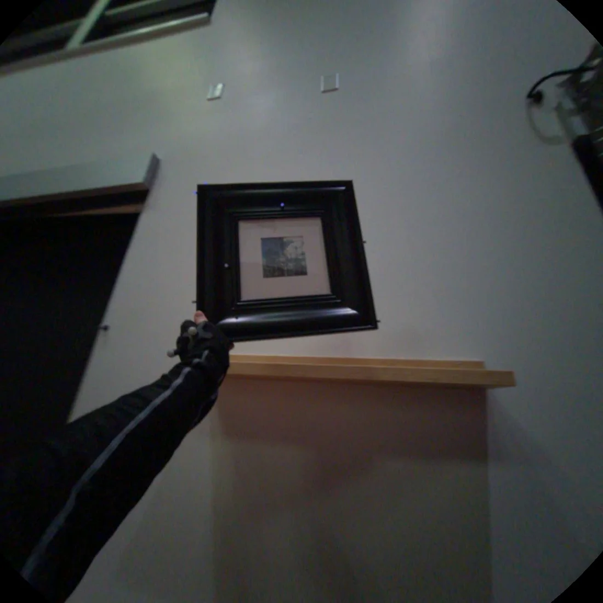
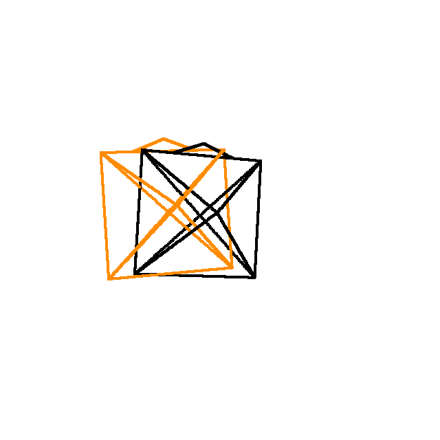
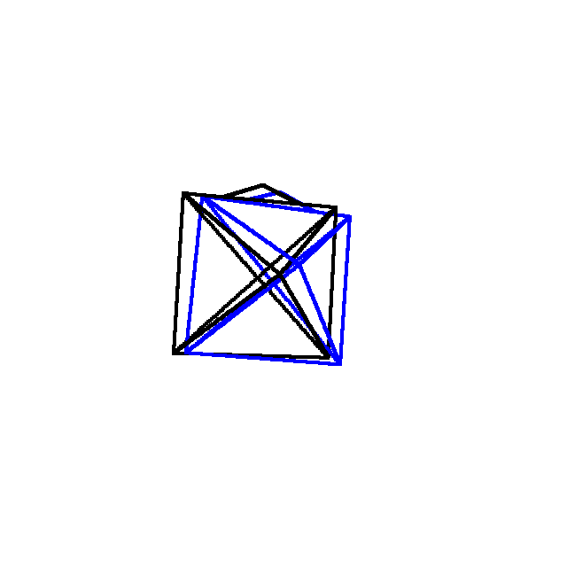
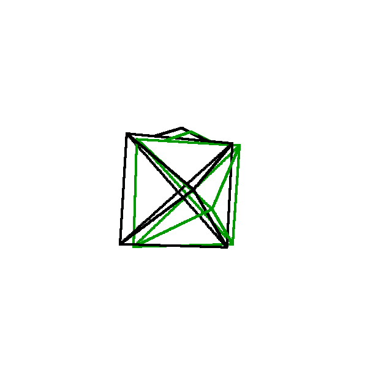
Figure 4。这里展示原 Figure 4 中 Frame 25 的代表行：黑色 wireframe 是 GT，彩色为预测。完整原图还含 Frames 05/45 与多序列；本文没有静默省略其结论，而是以代表行显示视觉编码，完整时间趋势按 caption/正文说明。

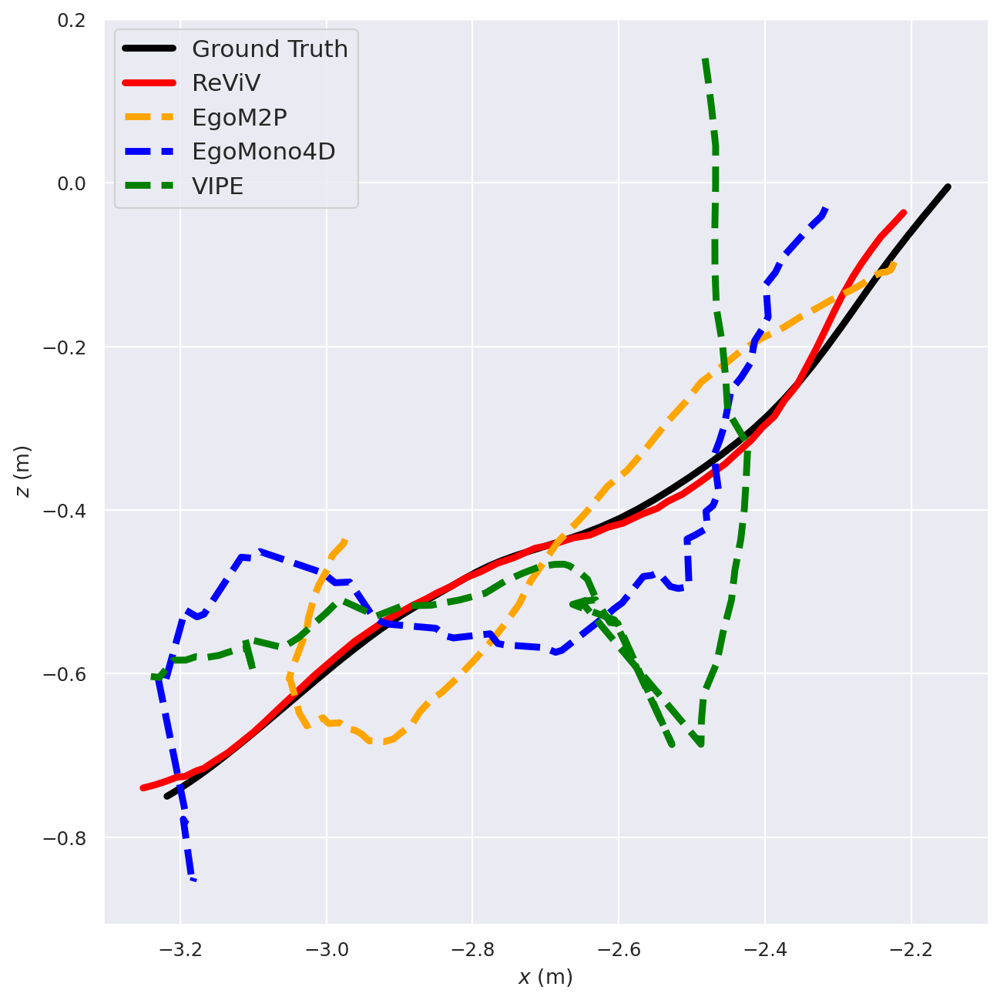
Figure 5。把 3D 相机轨迹投到二维平面比较路径形状。曲线接近直观显示 drift 较小，但投影会丢掉第三个维度，且不能单独反映旋转；因此应与 Table 4 的 ATE/RTE/RRE 合看。
0.E.2 Egocentric Gaze Estimation
作者用两组图展示 ReViV gaze point 更接近 GT，解释为能从全图上下文更好地推断意图。
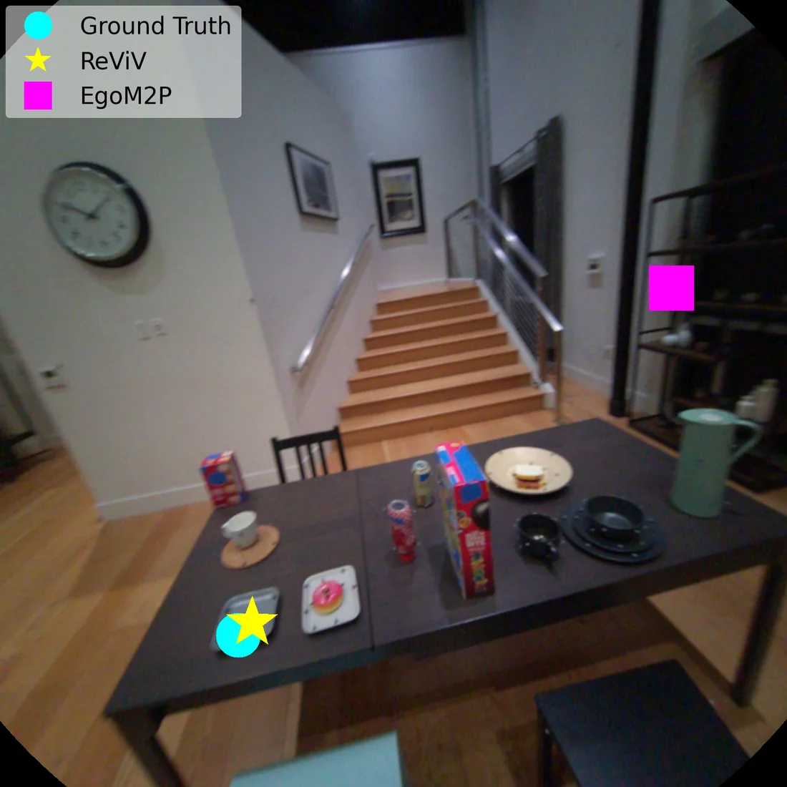
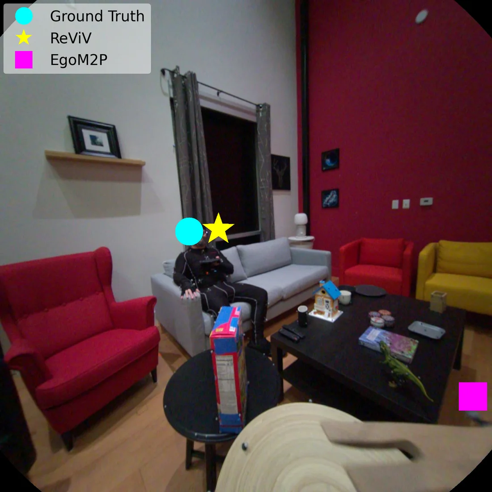
Figure 6。每幅图中的点/轨迹对应图像平面注视位置。它支持定性定位，不证明三维注视射线或对象级意图；正文 MSE 才是总体量化。
0.E.3 Egocentric Body Motion Reconstruction
完整 Figure 7 比较两个序列、Frames 05/30/55，并分别给 baseline VIPE camera 与 GT camera。作者举例：第一序列向右转并停在桌前，第二序列向左转并伸手取物；ReViV 的骨架更符合输入语义。
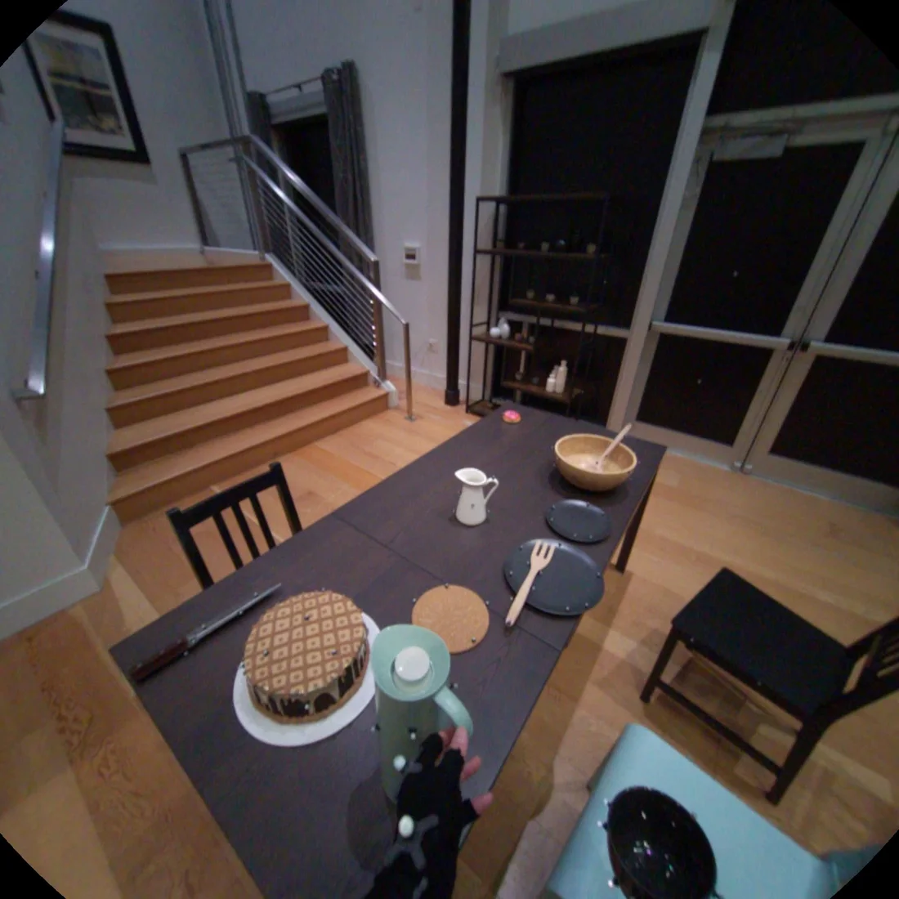
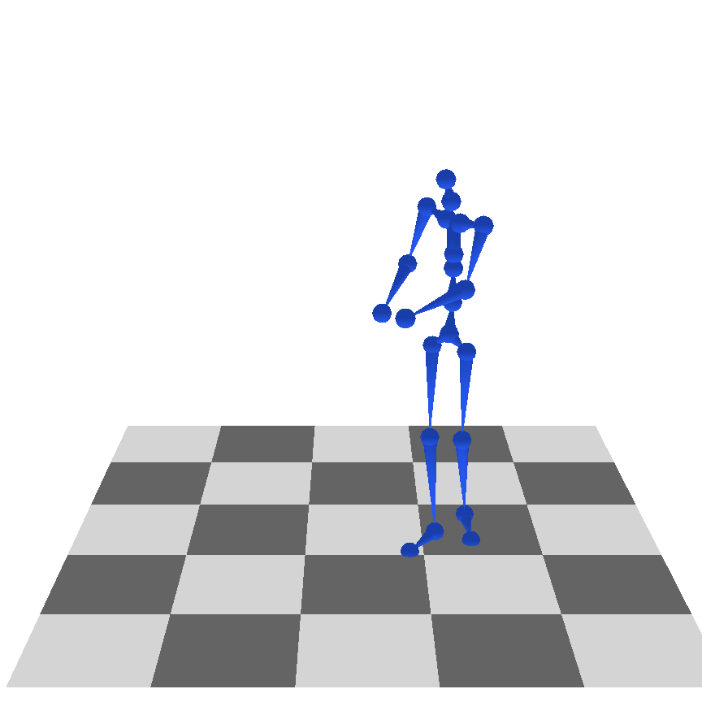
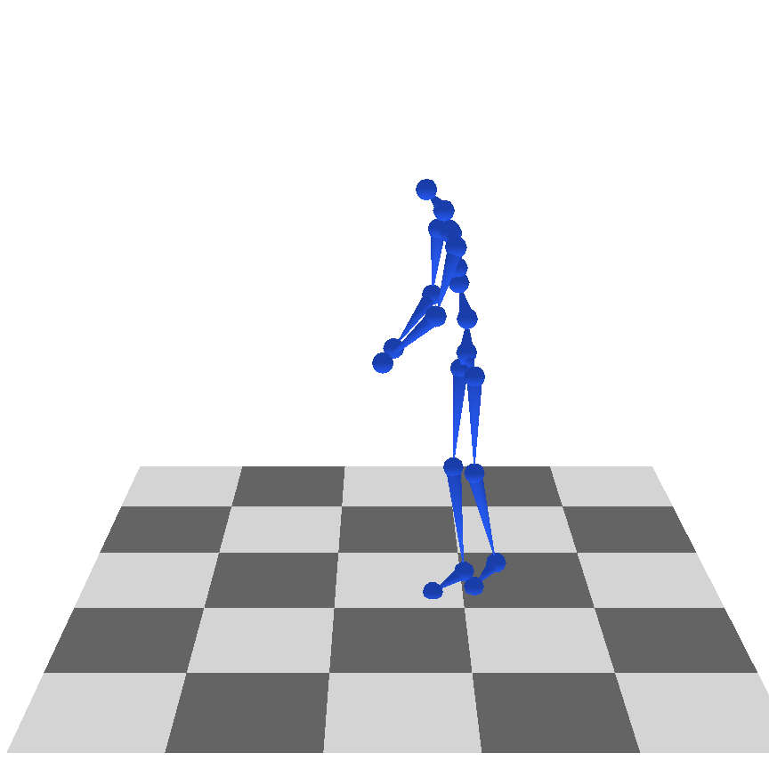
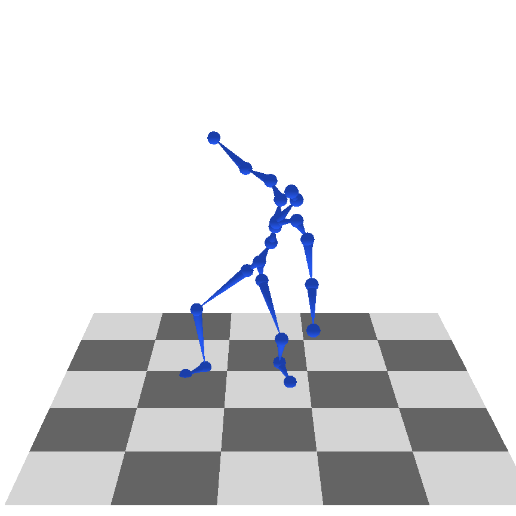
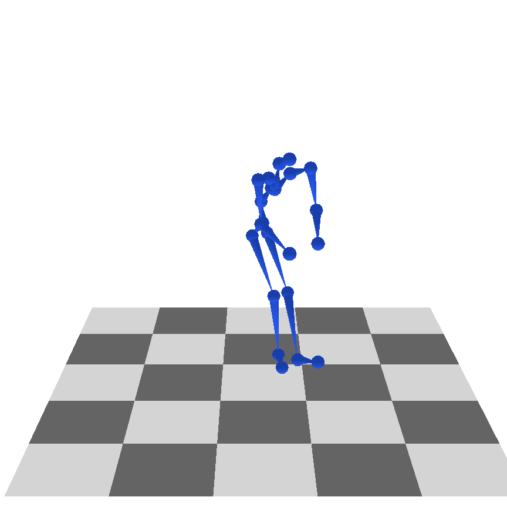
Figure 7。这里显示原图第一序列 Frame 30 的代表行。ReViV 不接收相机轨迹，而 baseline 在上半图使用 VIPE、下半图可使用 GT；作者据此强调联合视觉—身体分布对 unseen ADT 的泛化。定性图仍可能有样本选择偏差，应以 Table 2 配合判断。
- Figure 5 二维轨迹投影漏掉哪些信息？
- Figure 6 的“gaze”与三维视线有什么指标差异？
- Figure 7 为什么要同时展示 estimated camera 与 GT camera 条件 baseline？
Appendix 0.F Additional Ablation Studies
0.F.1 Hand Reconstruction Ablation
| Table 7 / 变体 | HoloAssist GA/RA/PA ↓ | HOT3D GA/RA/PA ↓ | ARCTIC GA/RA/PA ↓ | TACO GA/RA/PA ↓ |
|---|---|---|---|---|
| ReViV | 23.5 / 29.7 / 10.5 | 38.2 / 48.1 / 13.6 | 35.1 / 33.0 / 13.7 | 20.3 / 25.2 / 9.4 |
| HandData | 26.4 / 28.6 / 10.5 | 39.1 / 48.3 / 14.4 | 42.2 / 39.2 / 15.5 | 32.8 / 36.9 / 13.0 |
| HandSpec. | 38.7 / 48.7 / 15.7 | 82.0 / 73.9 / 21.7 | 75.8 / 77.2 / 22.6 | 53.2 / 52.1 / 17.9 |
| 1-to-1Mask | 34.9 / 43.9 / 13.7 | 60.9 / 58.6 / 16.1 | 55.0 / 49.0 / 16.4 | 34.9 / 39.7 / 13.1 |
| Uniform | 37.7 / 41.2 / 13.2 | 70.1 / 65.0 / 17.8 | 67.0 / 60.5 / 19.5 | 42.8 / 48.3 / 15.3 |
| Tiny | 33.8 / 42.1 / 14.0 | 54.2 / 59.9 / 16.9 | 50.8 / 45.6 / 15.8 | 30.0 / 35.8 / 12.1 |
趋势与身体一致：单任务 HandSpec 全数据集严重退化；只用手标注数据 HandData 小幅到明显退化，说明无手标注大数据仍提供有用视觉/场景先验；mask 两极和 Tiny 都不如 full。
HoloAssist 的 HandData RA 28.6 略优于 full 29.7、PA 相同 10.5，因此 full 也不是每个子指标都赢。跨四数据集整体与全局/局部姿态仍由 full 占优。
0.F.2 Vision Transformer Encoding Branch
离散视觉 token 丢失高频像素细节；连续 $\mathbf x_{\mathrm{ViT}}$ 旁路直接保留 raw RGB context。Table 8 比较去掉该支路与完整模型。
| Table 8 / 变体 | Cam ATE ↓ | RTE ↓ | RRE ↓ | Gaze MSE ↓ | Depth Abs Rel ↓ | $\delta_{1.25}$ ↑ | TACO Hand GA/RA/PA ↓ |
|---|---|---|---|---|---|---|---|
| w/o $\mathbf x_{\mathrm{ViT}}$ | 0.018 | 0.009 | 1.258 | 0.0233 | 0.296 | 51.7 | 22.0 / 27.0 / 9.6 |
| Full Model | 0.015 | 0.009 | 1.279 | 0.0211 | 0.265 | 56.5 | 20.3 / 25.2 / 9.4 |
连续支路改善 ATE、视线、深度和全部手指标；RTE 不变，RRE 反而由 1.258 变到 1.279，略差。因此 caption 的“consistently degrades all modalities”按每个任务整体理解可以成立，但不是每个相机子指标都同方向。
机制上，深度边缘、视线目标小纹理、手指局部证据和全局 egomotion 特征都需要量化前信息。它是绕过输入量化瓶颈，不会修复目标深度 tokenizer 本身的离散上限。
0.F.3 VQ-VAE Ablation
以身体 tokenizer 为例，codebook 512/1024/2048 的重建误差依次为 11.06/8.67/8.26 mm；扩到 4096 反而变为 9.02 mm，作者归因于 codebook utilization 低效。因此容量不是单调越大越好。
时空压缩 $[2,3]$ 得 8.26 mm；更强关节压缩 $[2,7]$ 为 15.47 mm，更强时间压缩 $[4,3]$ 为 13.05 mm。动作的时间细节与骨架拓扑都不能被过度压缩，$[2,3]$ 在 token 长度与重建之间最平衡。
- 为什么 4096 codebook 反而不如 2048？
- 连续 ViT 旁路改善输入信息，却为什么仍不能让深度超过专业模型？
- Table 7/8 中有哪些小例外提醒我们不要把 caption 读成“所有单元格都更好”？
官方代码对应表
官方代码仓库于 2026-08-12 获取，commit de23a67。下表用于澄清实现，不把仓库后续发布路径的工程选择冒充论文 v1 新公式。
Tokenizer 对应
| 论文组件 | 官方文件 | 实现证据 |
|---|---|---|
| 身体/手 VQ-VAE | reviv/vq/vqvae.py、reviv/vq/models/body_transformer.py、hand_transformer.py | 60 帧、21 关节、tubelet $[2,3]$；body/hand codebook 2048/1024 |
| 相机/视线 tokenizer | reviv/vq/models/cam_transformer.py、gaze_transformer.py | 低维时序 VQ-VAE，与 motion tokenizer 共用训练入口 |
| RGB/Depth tokenizer | cosmos_tokenizer/ | 公开 demo 下载 NVIDIA Cosmos encoder/decoder；512 与 256 两条路径使用不同 DV tokenizer |
# README_TOKENIZATION.md:23-31
With num_frames = 60 and tubelet_size = [2, 3]
the body tokenizer emits (60/2) x (21/3) = 210 tokens.
Body and the two hands are kept as three separate streams:
tok_body, tok_lhand, tok_rhand.这补充了主文 Equation (2) 的 “hand” 简写：官方实现实际将左手和右手保持为两个 21-joint token stream，而不是一个共享序列。
Dirichlet 多模态掩码对应
# reviv/data/masking.py:157-164
input_alphas = torch.tensor([mod["input_alphas"] for mod in modality_info.values()])
self.input_dirichlets = [Dirichlet(torch.clamp(a, min=eps)) for a in input_alphas.T]
target_alphas = torch.tensor([mod["target_alphas"] for mod in modality_info.values()])
self.target_dirichlets = [Dirichlet(torch.clamp(a, min=eps)) for a in target_alphas.T]随后 input_token_budget() 和 target_token_budget() 将 sampled ratio 乘总预算、处理整数余数、限制每模态最大/最小 token，并排除当前样本不存在的模态。配置文件为 RGB、depth、camera、gaze、左右手、body 等设置 $\alpha=0.01,0.1,1,10$ 的混合。
MGET encoder–decoder 对应
# reviv/models/reviv_model.py:474-477
if self.decoder_sep_mask:
sep_mask = repeat(mod_mask, "b n2 -> b n1 n2", n1=N) != \
repeat(mod_mask, "b n1 -> b n1 n2", n2=N)
adapted_attention_mask = adapted_attention_mask | sep_maskforward_encoder 对可见 token 做 encoder self-attention；forward_decoder 同时接 decoder self-attention mask 与 encoder cross-attention mask；forward_logits 按 modality id 调用各自输出 head。这与 Algorithm 1 的“全局条件编码 + 模态内目标建模 + 跨模态条件读取”一致。
主模型配置 reviv_base_500b_2048.yaml 固定输入/目标各 2048、12e/12d SwiGLU、bfloat16、500B token、global batch 1024。
发布推理路径对应
| 公开路径 | 输入 | 预测 | 实现说明 |
|---|---|---|---|
| 512 metric-depth | 32 帧、16 fps、512×512；tok_rgb_512 | 512 depth、camera、gaze、body（手由 hand demo） | Cosmos DV8x16x16；RGB 离散 token 条件 |
| 256 relative-depth | 16 帧、8 fps、256×256；tok_rgb + rgb@256 | 256 relative depth、camera、gaze、body | 离散 token + raw continuous clip，直接体现 ViT 旁路 |
# demo_infer.py:395-408
autoregression_schemes=["roar"]
decoding_steps=[3]
token_decoding_schedules=["linear"]
temps=[0.01]
cfg_scales=[2.0]
cfg_grow_conditioning=True发布 demo 逐目标模态调用 sampler 以节省显存，再各自 detokenize。README 称主模型约 400M parameters；检查点含 main model、五个 motion detokenizer 与 norm stats，depth decoder 需另取 Cosmos gated checkpoint。
参考文献处理说明
主 References 不逐条复制。Section 2 已覆盖作者用于建立技术谱系的三组代表工作：动态/前馈 4D reconstruction、ego scene reconstruction（EgoM2P/EgoGaussian/EgoMono4D）与 ego human motion（EgoEgo/EgoAllo/UniEgoMotion 等）。实验与附录中使用的 VIPE、Video Depth Anything、Cosmos、TMR、UniDepth 也已在对应环节说明角色。
Supplementary References 同样不逐条复述；其中与 Algorithm、发布代码或定性比较直接相关的 EgoM2P、VIPE、EgoMono4D、UniEgoMotion、EgoAllo 已被实质覆盖。
完整覆盖审计
paper map：reviv-paper-map.json。本文每个原文单元使用同名 data-source-id；最终状态不含 pending。
| 类别 | 原文/登记数量 | 已覆盖 | 不可获得 | 不适用 | 备注 |
|---|---|---|---|---|---|
| 来源状态 | 2 | 1 | 1 | 0 | 完整 HTML/ar5iv 已取；PDF 传输超时且未作证据 |
| Abstract / Sections / Subsections / Appendices | 31 | 31 | 0 | 0 | 保持原论文顺序，含 Limitations 与 Appendix A–F |
| 贡献 / 定义 / 公式与公式组 | 10 | 10 | 0 | 0 | 3 个编号公式；推理与尺度对齐公式明确标为分析者形式化 |
| Figures | 7 | 7 | 0 | 0 | Figure 4/7 用代表行显示，完整 panel 结论逐项文字覆盖 |
| Tables / Algorithm | 9 | 9 | 0 | 0 | Table 1–8 与 Algorithm 1 |
| 实验设置与实验组 | 9 | 9 | 0 | 0 | 身体、手、相机、视线、深度、主/附加消融、训练、VQ |
| 代码映射 | 4 | 4 | 0 | 0 | tokenizer、mask、MGET、inference |
| 参考文献列表 | 2 | 0 | 0 | 2 | 按 coverage protocol 不逐条复述，正文关键谱系均覆盖 |